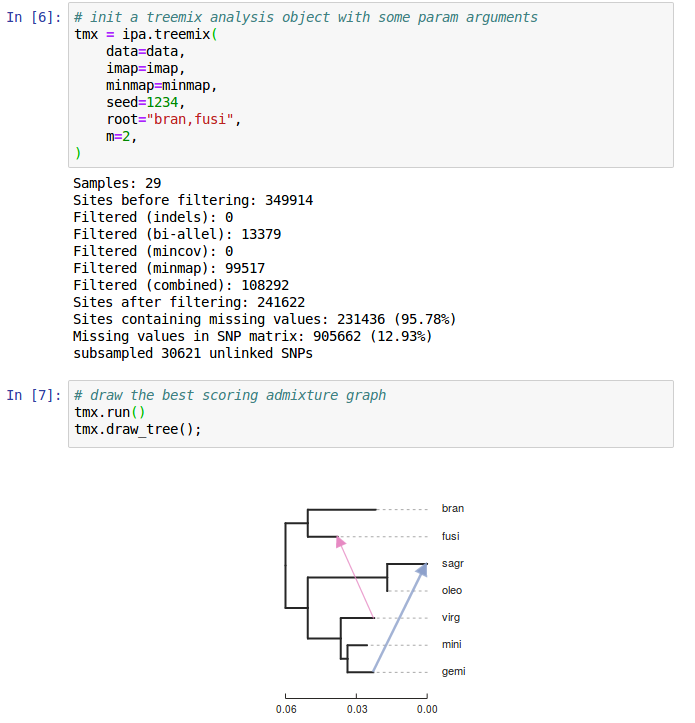

Evolutionary Genomics Research
In the Eaton lab at Columbia University
Dept. of Ecology, Evolution, and Environmental Biology
Outline: many topics few slides
1. Evolutionary research
2. Software development for evolutionary genomics research.
3. Species interactions in a hotspot of plant diversity.
4. Inferring hybrid gene flow using phylogenetic invariants.
5. Modeling the accumulation of speciation genes.
What is an Evolutionary Biologist?
Modern research in ecology and evolution requires a diverse skill set, from organismal biology, to genomics, statistics, and computational biology. My research and teaching centers on integrating these skills.


How can we most accurately reconstruct the
evolutionary history
of organisms from their genomes?
How can we use genomics to reconstruct historical
ecological interactions among species?
Genomics and Botany
And it's an exciting time for this! Genomic technologies are revolutionizing the study of ecology and evolution.

Genomics and Botany
And it's an exciting time for this! Genomic technologies are revolutionizing the study of ecology and evolution.

Genomics and Botany
And it's an exciting time for this! Genomic technologies are revolutionizing the study of ecology and evolution.

Genomics and Botany
And it's an exciting time for this! Genomic technologies are revolutionizing the study of ecology and evolution.

Coding, reproducibility, software development
Efficient handling of large data sets, clear and reproducible coding skills, statistical literacy, understanding of data within a specialized field (e.g. genomics).

Coding, reproducibility, development
Coding, reproducibility, development
import ipyrad.analysis as ipa
# initiate an analysis tool with arguments
tool = ipa.pca(data=data, ...)
# run job (distribute in parallel)
tool.run()
# examine results
...
Herbicide resistance among Amaranthus species.

The Hengduan Mountains
The Hengduan Mountains
The Hengduan Mountains
The Hengduan Mountains
The Hengduan Mountains
The Hengduan Mountains
Floral diversity in Pedicularis


Pedicularis L. in China
Species rich:
>600 species worldwide, approximately 300 endemic to Hengduan.
We collected >60 species from 100 locations in 2018.
Morphologically diverse:
Spectacular floral diversity and abundant homoplasy;
similar forms have evolved repeatedly.
Complex history of assembly:
Mountain uplift over millions of years, glacial cycles over
thousands of years, river and mountains barriers, lead to
constantly shuffling communities (and species
interactions).